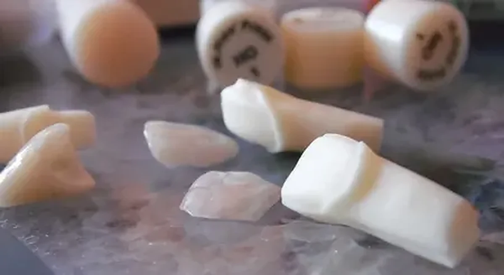

Échange initial
Nous définissons les types de restaurations, le mode de transmission et la personne de contact.
Collaboration exclusivement B2B
CDL collabore exclusivement avec les professionnels de la médecine dentaire. Vous pouvez commencer par un seul cas, sur empreinte conventionnelle ou en flux numérique, avec collecte et livraison à Bucarest ou expédition express dans toute la Roumanie.

Le premier cas
Nous définissons les types de restaurations, le mode de transmission et la personne de contact.
Vous pouvez commencer par un cas adapté afin d’évaluer la communication et le résultat technique.
Après le premier cas, nous définissons le mode de collecte, les délais et les étapes habituelles.
Bucarest et toute la Roumanie
La collecte et la livraison sont organisées selon l’itinéraire et l’horaire convenu.
Pour le reste du pays, nous convenons de l’emballage, de l’identification du cas et de l’expédition.
Les fichiers STL et les informations du cas peuvent être transmis par le canal convenu.
Les points importants à clarifier sont discutés avant la réalisation, et non après l’achèvement.
Nous recevons les empreintes, modèles, antagonistes, enregistrements d’occlusion et instructions écrites.
Nous recevons les fichiers STL et les données nécessaires à la conception et à la production.
Questions fréquentes
Non. Laborator Dentar CDL travaille exclusivement en B2B par l’intermédiaire de chirurgiens-dentistes, cabinets et cliniques dentaires.
Oui. Un cas pilote permet d’évaluer concrètement le flux et la communication.
Oui. La collaboration nationale est organisée par transfert numérique et transport express.
Le délai est défini selon le type de restauration, les étapes nécessaires et l’exhaustivité des données du cas.
Collaboration professionnelle